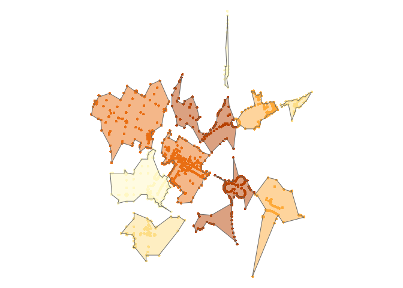

concaveman
A very fast 2D concave hull algorithm in JavaScript by Vladimir Agafonkin, wrapped in R (generates a general outline of a point set).
library(concaveman)
library(dplyr)
#>
#> Attaching package: 'dplyr'
#> The following objects are masked from 'package:stats':
#>
#> filter, lag
#> The following objects are masked from 'package:base':
#>
#> intersect, setdiff, setequal, union
library(purrr)
library(sf)
#> Linking to GEOS 3.8.0, GDAL 3.0.4, PROJ 6.3.1
library(tmap)
data(points)
polygons <- map(unique(points$k),
~ concaveman(points[points$k %in% .,])
) %>%
map2(unique(points$k), ~ mutate(.x, k = .y)) %>%
reduce(rbind)
tm_shape(points) +
tm_dots(col = "k", size = 0.1, legend.show = FALSE) +
tm_shape(polygons) +
tm_fill(col = "k", alpha = 0.5, legend.show = FALSE) +
tm_borders() +
tm_layout(frame = FALSE)
Installation
concaveman can be installed from CRAN:
install.packages("concaveman")You can also install the dev version from github:
devtools::install_github("joelgombin/concaveman")Usage
library(concaveman)
library(dplyr)
library(purrr)
library(sf)
library(tmap)
data(points)
polygons <- concaveman(points)
polygons
#> Simple feature collection with 1 feature and 0 fields
#> geometry type: POLYGON
#> dimension: XY
#> bbox: xmin: -122.0844 ymin: 37.3696 xmax: -122.0587 ymax: 37.3942
#> CRS: +proj=longlat +datum=WGS84 +ellps=WGS84 +towgs84=0,0,0
#> # A tibble: 1 x 1
#> polygons
#> <POLYGON [°]>
#> 1 ((-122.0809 37.3736, -122.0813 37.3764, -122.0812 37.3767, -122.082 37.3772, …
polygons2 <- map(unique(points$k),
~ concaveman(points[points$k %in% .,])
) %>%
map2(unique(points$k), ~ mutate(.x, k = .y)) %>%
reduce(rbind)
tm_shape(points) +
tm_dots(col = "k", size = 0.1, legend.show = FALSE) +
tm_shape(polygons2) +
tm_fill(col = "k", alpha = 0.5, legend.show = FALSE) +
tm_borders() +
tm_layout(frame = FALSE)
#> Warning: The shape polygons2 is invalid. See sf::st_is_valid
Signature: concaveman(points, concavity = 2, lengthThreshold = 0)
-
pointsCan be represented as a matrix of coordinates or ansfobject. -
concavityis a relative measure of concavity. 1 results in a relatively detailed shape, Infinity results in a convex hull. You can use values lower than 1, but they can produce pretty crazy shapes. -
length_threshold: when a segment length is under this threshold, it stops being considered for further detalization. Higher values result in simpler shapes.
Algorithm
The algorithm is based on ideas from the paper A New Concave Hull Algorithm and Concaveness Measure for n-dimensional Datasets, 2012 by Jin-Seo Park and Se-Jong Oh.
This implementation by Vladimir Agafonkin dramatically improves performance over the one stated in the paper (O(rn), where r is a number of output points, to O(n log n)) by introducing a fast k nearest points to a segment algorithm, a modification of a depth-first kNN R-tree search using a priority queue.